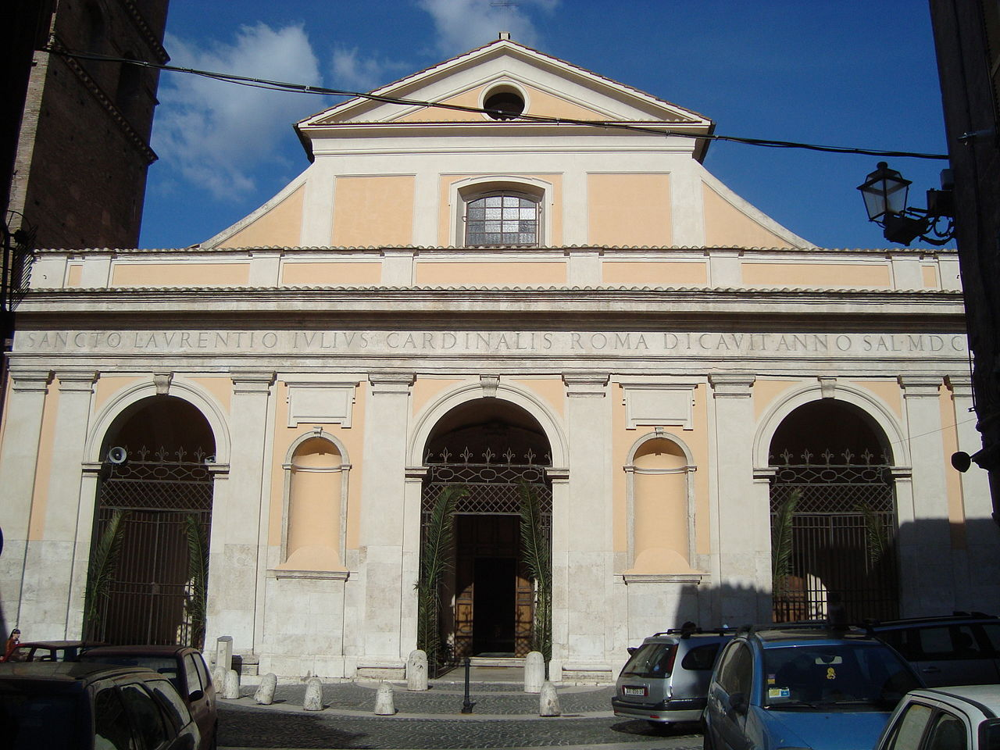
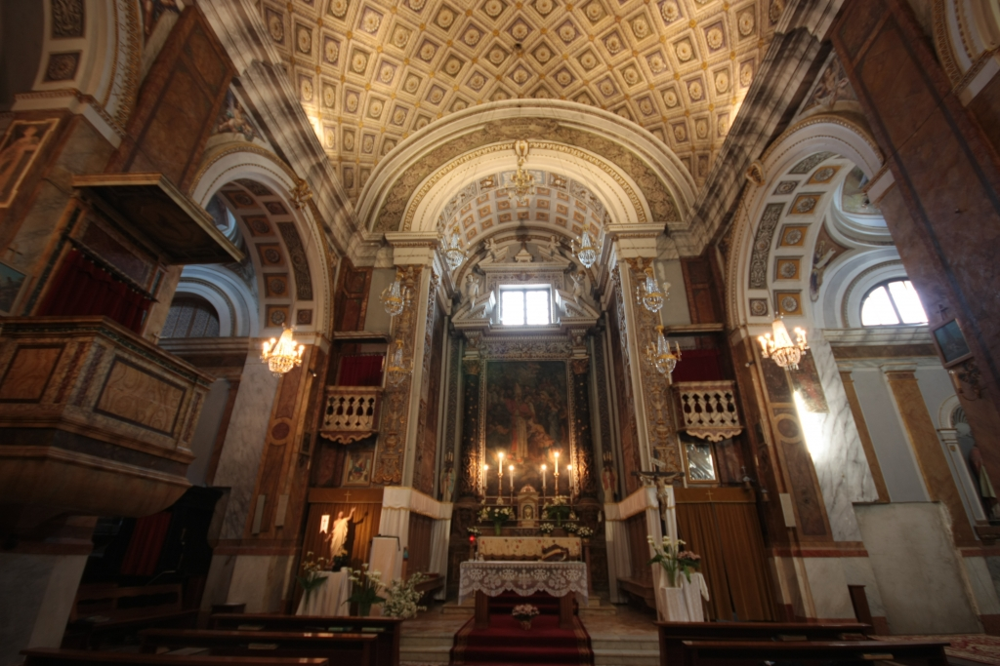
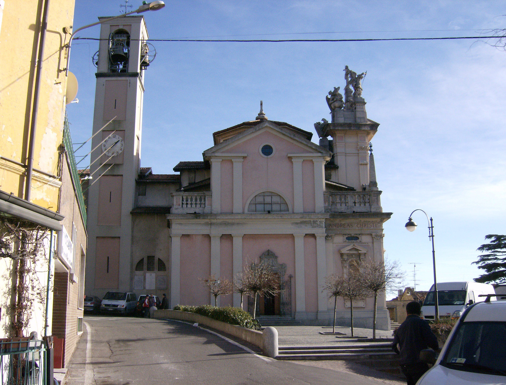

Tivoli è un comune della città metropolitana di Roma ed ha circa 50mila abitanti.
Tra i suoi borghi possiamo trovare varie opere artistiche e culturali, come:
• Basilica Cattedrale di San Lorenzo diacono e martire

• Chiesa di San Biagio vescovo e martire

• Chiesa di Sant'Andrea apostolo
 • Villa d'Este